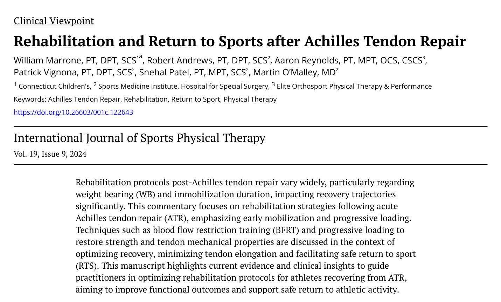
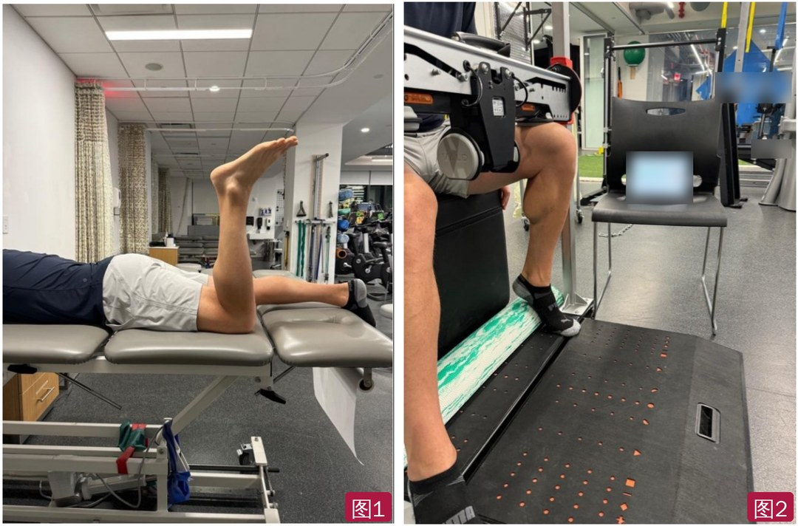
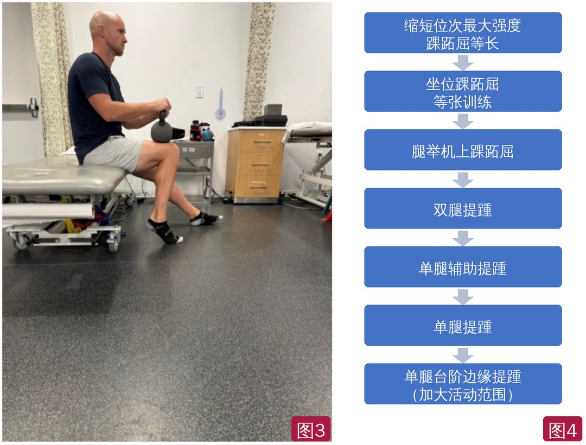
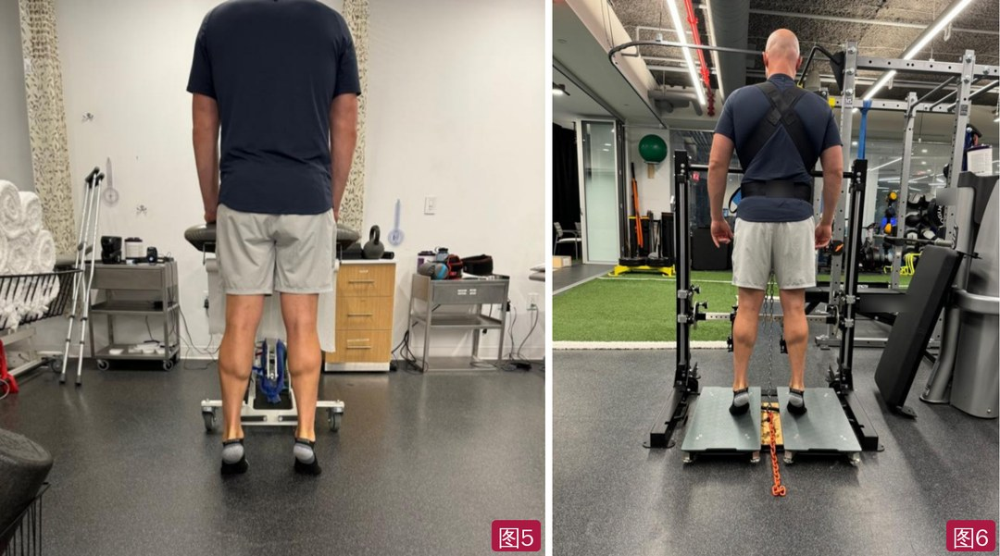
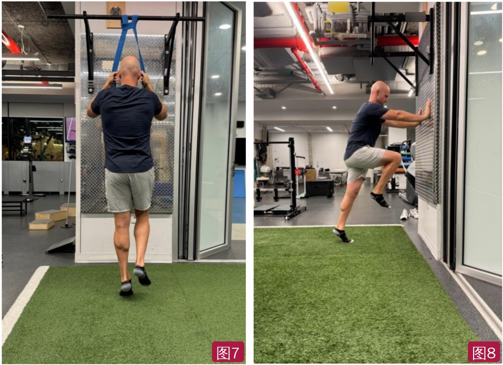
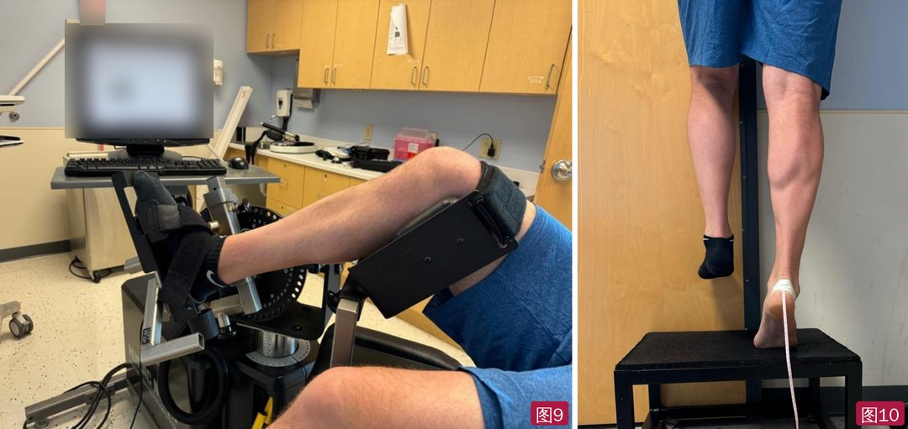

🔖原文首页（IJSPT 2024 年第 19 卷第 9 期）
📚 文献卡片
▪ 英文原题：Rehabilitation and Return to Sports after Achilles Tendon Repair（跟腱修复术后的康复与重返运动）
▪ 作者：William Marrone, PT, DPT · Robert Andrews, PT, DPT · Aaron Reynolds, PT, MPT · Patrick Vignona, PT, DPT · Snehal Patel, PT, MPT · Martin O’Malley, MD
▪ 机构：Connecticut Children's；美国特种外科医院（HSS）运动医学研究所；Elite Orthosport 物理治疗与运动表现中心
▪ 期刊：International Journal of Sports Physical Therapy（IJSPT）
▪ 年卷期：2024;19(9):1152-1165
▪ PMCID：PMC11379499
▪ 文章类型：临床观点（Clinical Viewpoint）
▪ 关键词：Achilles tendon repair · rehabilitation · return to sport · physical therapy
跟腱是人体最大、最强、弹性最好的“弹簧”，把比目鱼肌和腓肠肌连到跟骨。高速跑时承受约 11 倍体重，体操落地时可达 15 倍体重。跟腱断裂需要很大的力，无论怎样治疗都常留下长期功能缺陷。近年来断裂越来越多：篮球、橄榄球、体操等爆发性项目中常见，NFL 过去 25 年增加了 3～5 倍（2023-2024 赛季 24 例），匹克球等休闲项目的流行也带来了更多病例。
术后康复方案差别很大，尤其是负重时间和制动时长。过去为减少跟腱延长而采用保守的负重进阶；但近年证据显示，加速负重和早期活动并不会增加跟腱延长。本文介绍运动员急性跟腱修复（ATR）后的加速康复要点：早期负重和活动、血流限制训练（BFRT）、渐进加载，以及贯穿全程的重返运动（RTS）指标监测。
| 阶段 | 时间 | 关键内容 |
|---|---|---|
| 术后即刻期 | 0～2 周 | 短腿石膏或 CAM 靴 + 2～3 块足跟垫；近端力量训练；踝主动背屈不超过 0°；禁止被动背屈 |
| 控制性活动期 | 2～6 周 | 靴内部分负重（50%）→ 4～6 周完全负重；屈膝 90° 主动背屈到中立位；缩短位次最大等长；BFR |
| 早期康复期 | 6～12 周 | 换运动鞋、逐步降低足跟垫；双腿 → 单腿提踵；12 周前避免被动牵伸；监测静息踝角度 |
| 后期康复期 | 12～24 周 | 力量 >70%～80% LSI；弹跳和增强式进阶；12～16 周后开始跑步 |
| 重返运动期 | 24 周以后 | 等速/等长力量 >90% LSI；坐位比目鱼肌等长 1.5～2.0 倍体重；跳跃测试不对称 <10% |
一句话概括：早负重、早活动，但前 12 周严防跟腱被拉长；用 BFR 和渐进加载恢复力量，再按客观指标一步步回到赛场。
• 粗壮程度：断裂后横截面积（CSA）越大，承载能力越强；Zellers 等发现，术后 12 周的 CSA 是 52 周时提踵肢体对称指数（LSI）的最强预测因子
• 扭转结构：跟腱从小腿中部到跟骨止点向外扭转约 90°，影响应变传递，以及不同小腿姿势（内翻/外翻）下各肌肉的贡献
• 黏弹性：弹性负责牵张-缩短周期（SSC）中的能量储存和释放，黏性负责吸收力；恢复这些性质是恢复跟腱功能的关键
• 跟腱断裂占所有肌腱和韧带损伤的 10.7%，年发病率约 8/10 万，男性占 79.2%，65.2% 发生在运动中
• 典型机制是伸髋伸膝时踝突然背屈；运动相关断裂中高达 90% 由加速-减速动作引起
• 女子体操的跟腱损伤率明显高于其他项目（16.73/10 万次运动暴露）；多达 46% 的患者断裂前有跟腱痛或肌腱病史
• 竞技运动员通常首选手术：跖屈力量恢复更好、再断裂率更低。早期活动和负重时，手术与保守的再断裂风险曾被认为相当；但一项多中心 RCT（石膏制动 2 周后，带足跟垫的支具完全负重 6 周）发现保守组再断裂率是手术组的 10 倍——无论选哪条路，都推荐早期功能康复
• 无论手术与否，跟腱都会延长。两个主要原因：术中缝合张力不足和康复中逐渐延长。术中会参照健侧张力，把患侧静息张力调得略高，为术后延长留余量
• 术后 8 周前不建议背屈超过中立位：无论负重方案如何，跟腱延长最多发生在术后 2～6 周
| 术式 | 特点 |
|---|---|
| 开放修复 | 生物力学上最强，手术时间较长，伤口并发症率与微创相近；高需求运动员常用，允许更早活动和负重——目前仍是“金标准” |
| 经皮/微创修复 | 切口小、美观；跟腱延长风险比开放修复高，腓肠神经损伤风险可能更高 |
| SpeedBridge™ 系统 | 用锚钉和沙漏形缝线把跟腱固定到跟骨；体外实验位移更小、失效负荷更高，但尚无临床结果，锚钉可能导致持续跟骨痛 |
• ① 尊重肌腱愈合时间：炎症期（1～2 周）清除损伤组织；增殖期（至 4 周）成纤维细胞产生 I 型胶原；重塑期（可长达 18 个月以上）结构成熟，抗拉强度和弹性提高
• ② 早期活动：机械负荷促进肌腱愈合和成熟；早期活动比延迟活动愈合更好、再断裂率更低
• ③ 恢复肌腱力学性质：应力、应变和剪切模量；机械张力和活动帮助胶原纤维排列、增加肌腱厚度。低负荷 BFR 增加跟腱力学和形态性质的效果与常规大负荷训练相近
• ④ 渐进力量训练：小腿肌肉术后明显萎缩；在不同踝背屈角度训练跖屈肌可改变腓肠肌和比目鱼肌的相对贡献；要考虑负荷大小、持续时间和加载速率
• ⑤ 恢复弹性功能：跟腱弹性是 SSC 动作的基础
• ⑥ 把 RTS 当作连续过程：用关键表现指标（KPI）系列测试来指导决策，而不是只看某个时间点
作者推荐基于标准的进阶，同时考虑个体和情境因素以及愈合生物学；加速方案必须事先与手术医生沟通并获同意（表 1）。
表1 跟腱修复术后康复分期
| 术后即刻期 0～2 周 | |
| 目标 | • 保护手术伤口 • 维持近端肌力 • 减轻疼痛和肿胀 |
| 干预 | • 短腿石膏或 CAM 靴（2～3 块足跟楔垫）制动 • 近端力量训练 • 踝主动活动（背屈不超过 0°） |
| 进阶标准 | 伤口愈合、拆除石膏并获医生同意 |
| 注意事项 | • 让切口愈合 • 监测并发症（如深静脉血栓、感染） • 禁止被动背屈 • 主动背屈不超过 0°（或按医生决定） |
| 早期康复 2～6 周 | |
| 目标 | • 疼痛轻微 • 开始跖屈等长收缩 • 踝活动度达到本阶段限制 • 维持下肢、核心和心肺体能 |
| 干预 | • 逐步行走：先 CAM 靴 + 足跟垫部分负重（50%） • 屈膝 90° 下主动背屈到 0° • 缩短位（靴内或足跟楔垫上）次最大等长 • 近端力量训练，可配合 BFR（拆线并获医生同意后） |
| 进阶标准 | • CAM 靴内可耐受负重 • 踝主动背屈到中立位 • 疼痛轻微、肿胀减轻 |
| 注意事项 | • 4 周内屈膝位被动背屈不超过中立位 • 10 周内伸膝位禁止被动背屈 • 俯卧屈膝位监测静息背屈张力 |
| 中期 6～12 周 | |
| 目标 | • 改善踝背屈活动度，但不过度牵拉 • 步态正常化 • 提高踝跖屈力量 |
| 干预 | • 双腿到单腿提踵进阶 • 在足跟楔垫上提踵到末端 • 继续使用 BFR |
| 进阶标准 | 全范围双腿提踵 |
| 注意事项 | 俯卧屈膝位监测静息背屈张力 |
| 后期康复 12～24 周 | |
| 目标 | 提高全范围单腿跖屈力量和耐力 |
| 干预 | • 双腿跳进阶 • 弹力带辅助弹跳 |
| 进阶标准 | • 完成增强式训练进阶 • 顺利完成重返跑步方案 |
| 注意事项 | 监测负荷 |
| 重返运动 24 周以后 | |
| 目标 | 等速/等长力量 >90% LSI |
| 干预 | • 继续增强式进阶 • 继续局部和整体力量进阶 • 开始并推进场地训练 |
| 进阶标准 | • 力量 >健侧 80% • 坐位小腿等长力量 >2.5～3.0 倍体重 • 双腿反向纵跳不对称 <20% • 单腿跳不对称 <20% |
| 注意事项 | 监测训练负荷 |
CAM 靴：可控踝关节活动靴；BFR：血流限制；LSI：肢体对称指数。
• 目标：止痛、控制肿胀、保护手术部位；出现感染或深静脉血栓征象立即告知医生
• 传统上非负重 + 短腿石膏或 CAM 靴；加速方案可允许立即在 CAM 靴 + 足跟垫中部分负重。足跟垫可使正常步态中跖屈肌活动减少 57%，降低修复处应变
• 可开始近端和核心力量训练；经医生同意，可在同侧或对侧肢体开始 BFR
• 可在靴或石膏内做次最大随意跖屈等长，促进静脉回流、激活小腿；注意别让伤口周围出汗，以免增加感染风险
目标：靴内过渡到完全负重，改善腓肠肌-比目鱼肌激活，控制疼痛和肿胀，切口愈合良好后开始心肺训练。加速方案通常在 4～6 周内从部分负重进阶到靴内完全负重；可以用较短步幅行走。
• 监测跟腱长度：无法直接测量，可用被动张力作替代——俯卧、屈膝 90°、髋中立，测量并追踪踝的静息位置（图 1）。相对背屈突然增加要告知医生，并在降低足跟垫或增加负重时考虑
• 可开始踝主动活动，屈膝位背屈通常限制在中立位 4～6 周；术后 12 周内一般避免被动牵伸小腿
• 有点紧是好事：早期的紧绷感可能说明跟腱延长速度合适；长期随访中很少有人抱怨跟腱“太紧”
• 靴子会限制后足、中足和拇趾活动，可在保护范围内处理关节活动障碍（不被动牵伸跟腱）；切口愈合后可做软组织松动
• 在跖屈末端（缩短位）做次最大、无痛等长，既减少延长应力又提高肌腱刚度；可用 NMES 帮助腓肠肌激活，用固定测力计或测力台做生物反馈（图 2）

🔖图1（左）：俯卧屈膝位踝的静息位置，可作为跟腱延长的替代指标——延长过多时，静息位置会比健侧更偏背屈；图2（右）：屈膝 + 踝跖屈的缩短位下做次最大跖屈等长，用测力装置做生物反馈（背景横幅、器械字样和屏幕已模糊处理）
• Hansen 等的 RCT：使用 BFR 的跟腱修复患者在术后 3 个月的患侧小腿等速力量大于常规康复组
• 低负荷 BFR 用于跟腱病时，可产生与大负荷训练相近的力学适应
• 前 2 周即可用 BFR 做直腿抬高、侧卧髋外展、长弧伸膝；随后从跖屈等长进阶到有限范围的等张抗阻训练 + BFR。作者建议前 12 周重点使用 BFR；12 周以后以中到大负荷、不加 BFR 的渐进抗阻为主，后期把 BFR 用于“减量日”或额外的肥大训练
• BFR 用于缺血预适应可能有助于募集和恢复，但只是经验，需要更多研究
目标：步态正常化，恢复跖屈力量，逐步恢复闭链踝背屈。步行中跟腱峰值负荷约为 2～4 倍体重。
• 从靴子过渡到运动鞋时，重新使用助行器保证步态；逐步降低足跟垫高度，同时根据症状和静息张力控制延长
• 常见步态偏差：支撑期延长、末期不敢蹬地——用专项练习和提示纠正；水疗和减重跑台有助于逐步增加负重
• Zellers 的个案报告：从 CAM 靴换成运动鞋后，剪切波弹性成像显示剪切模量和黏性下降——这可能解释为什么有些患者在脱靴时容易再断裂
• 在足够力量之前，避免下楼梯等大离心负荷动作；必要时治疗之外仍穿靴
• 跖屈训练先在屈膝位进行（图 3），避免同时增加阻力和肌肉/肌腱长度；按图 4 进阶。全范围双腿提踵约 8 周后、单腿提踵约 12 周后才可能做到——术后 12 周只有 50% 的患者能完成单腿提踵
• 提踵时经第一跖趾关节发力，避免用屈拇代偿（图 5）；测力台可做双腿提踵等长训练和对称性监测（图 6）
• 减重跑台和水疗（水深到脐时体重约减 50%）可帮助在无代偿下练单腿提踵
• 深蹲、上台阶、弓步等基础动作在可用范围内进阶；能用良好向心控制登上 8 英寸（约 20 cm）台阶、闭链背屈足够时，可开始椭圆机和登阶机

🔖图3（左）：坐位踝跖屈等张抗阻训练；图4（右）：跖屈肌力进阶示例，从缩短位等长到单腿台阶边缘提踵（流程图中文重绘）

🔖图5（左）：站立双腿提踵，强调经第一跖趾关节发力，在不代偿的前提下达到最大足跟高度；图6（右）：在测力台上做双腿提踵等长，用于生物反馈和不对称监测，训练和测试都可用（器械字样已模糊处理）
目标：渐进加载，力量 >70%～80% LSI，开始增强式和跑步。逐步恢复受控的闭链背屈非常重要——它对减速等专项动作至关重要。
• 开始增强式之前确认跖屈力量足够：双腿/单腿提踵的数量和质量、跑前练习的技术，有条件时做等长/等速测力
• 先做低幅度冲击：绳梯、弹力带辅助弹跳（图 7）；再从密集型到分散型增强式，如跳箱，最后到跳深。不要着急
• 开始跑步的条件（作者偏好，场地和球场项目）：坐位跖屈等长力量 1.5～2.0 倍体重，全范围单腿提踵 10 次，单腿蹲控制良好；通常术后 12～16 周以后才开始跑。减重跑台或泳池可更早引入冲击
• 跑前练习帮助建立足踝刚度和短触地（图 8）
• 别忘了健侧：成人跟腱断裂后 1.3%～5.5% 会发生对侧断裂，体力职业是危险因素；健侧也应进行类似的力量和功能训练，并监测峰值力矩/体重、反应力量等

🔖图7（左）：弹力带辅助单腿弹跳，弹力带减轻小腿负担，是单腿增强式的入门练习；图8（右）：三重伸展扶墙练习，先保持 A 字姿势，再进阶到原地踏步和换腿，为跑步做准备（器械品牌字样已模糊处理）
目标：增加训练量，力量和爆发力达到 KPI 的 90% 以上。精英运动员 RTS 率 61%～100%，跳跃和爆发性项目更低；NBA 球员伤后 2 年内上场时间和效率值下降。Cretnik 报告再断裂率 1%，80.89% 回到伤前水平，但 16.48% 活动度下降；1 年时跖屈力量 LSI 常差 10%～30%，末端跖屈无力尤其明显；提踵耐力差 20%～30% 可持续 12 个月以上。
• 力量：等速测力是金标准（图 9），作者一般术后 4 个月才开始等速测试；目标 >90% LSI，峰值等长力量 1.5～2.0 倍体重
• 耐力：单腿提踵测试（图 10），按次数和总功（次数 × 提踵高度）计算 LSI
• 慢速 SSC：反向纵跳、单腿反向纵跳、单腿跳远——跳远推进阶段近 43% 的能量来自踝
• 快速 SSC：跳深和单腿跳深，计算反应力量指数（RSI = 跳高 / 触地时间，触地 <250 ms）
• 按预设专项动作做好之后，加入神经认知和反应训练，并与伤前或同位置常模对比

🔖图9（左）：踝跖屈和背屈的等速力量测试；图10（右）：站立单腿提踵测试，评估肌肉耐力，按次数或总功（次数 × 提踵高度）计算肢体对称指数（显示器品牌和屏幕已模糊处理）
表2 重返运动测试建议
| 能力 | 测试方法 | 达标标准 |
|---|---|---|
| 力量 | 等速测试（30°/秒，速度可变）；坐位比目鱼肌等长力量测试 | LSI >90%；比目鱼肌等长 1.5～2.0 倍体重 |
| 肌肉耐力 | 单腿提踵测试 | 次数 LSI >90%；总功（次数 × 提踵高度）LSI >90% |
| 爆发力（慢速 SSC） | 反向纵跳；单腿反向纵跳；单腿跳远 | 双侧不对称 <10%～20%；单腿跳高不对称 <10%；单腿跳远不对称 <10%；有条件时做三维生物力学 |
| 反应力量（快速 SSC） | 跳深；单腿跳深 | 双腿 RSI >1.5；单腿 RSI >0.5；不对称 <10% |
测试细节可参考 VALD ForceDecks 用户指南，以及 Comfort 等编《Performance Assessment in Strength and Conditioning》（Routledge，2019）。
• 回到场地后，重点是技能、力量和负荷累积以及专项负荷能力。Buckthorpe 的场上康复四大支柱：恢复动作质量、体能训练、恢复专项技能、逐步提高慢性训练负荷
• 所有相关人员要充分沟通，避免过渡期出现负荷骤增；作者经验是临床人员在后期常常加载不足，导致转入体能训练时相对过载
• 证据级别低：临床观点文章，没有原始数据；分期、BFR 用法和多项数值标准主要来自作者经验或借鉴 ACL 文献，作者也承认跟腱术后理想的 RTS 测试组合尚不清楚
• 亮点：围绕“早活动但防延长”给出可操作的分期、静息踝角度监测、跖屈进阶顺序、开始跑步和 RTS 的客观标准，还提醒关注健侧
• 数值前后不一致：表 1 重返运动标准写坐位小腿等长 >2.5～3.0 倍体重、力量 >健侧 80%、跳跃不对称 <20%；而正文和表 2 写 1.5～2.0 倍体重、>90% LSI、不对称 <10%；双腿 RSI 正文写 >1.3，表 2 写 >1.5
• 被动背屈限制说法不一：表 1 写屈膝位 4 周、伸膝位 10 周内禁止被动背屈；正文写 8 周前不背屈过中立位、12 周内避免被动牵伸
• 分期名称不统一：正文“控制性活动期（2～6 周）”“早期康复期（6～12 周）”，表 1 对应为“早期康复”“中期”
• 图号混乱：原文有两个图 5 和两个图 6，没有图 8（正文提到图 8 的提踵测试，图注写的是图 9）；本文按出现顺序重新编号为图 1～10
① 0～2 周：石膏/靴 + 足跟垫，近端训练，禁止被动背屈
② 2～6 周：靴内部分 → 完全负重；屈膝位主动背屈到中立；缩短位等长 + BFR；监测静息踝角度
③ 6～12 周：换鞋、降足跟垫；屈膝位跖屈 → 双腿 → 单腿提踵；12 周前不被动牵伸
④ 12～24 周：力量 >70%～80% LSI；弹跳和增强式；1.5～2.0 倍体重 + 10 次单腿提踵后再跑
⑤ 24 周以后：等速 >90% LSI，单腿提踵、跳跃和 RSI 测试达标后逐步回到场地
★ 贯穿始终：有点紧没关系，相对背屈突然增加才要警惕；别忘了健侧
欢迎关注骨科康复小黄公众号，获取更多物理治疗的专业知识！
📄参考文献：
Marrone W, Andrews R, Reynolds A, Vignona P, Patel S, O’Malley M. Rehabilitation and Return to Sports after Achilles Tendon Repair. Int J Sports Phys Ther. 2024;19(9):1152-1165. PMCID: PMC11379499.
文中 10 张图片均来自原文（按出现顺序重新编号）：图 4 进阶流程中文重绘，照片中的背景横幅、器械品牌和屏幕文字已模糊；表 1～2 已译为中文，仅用于学术交流。